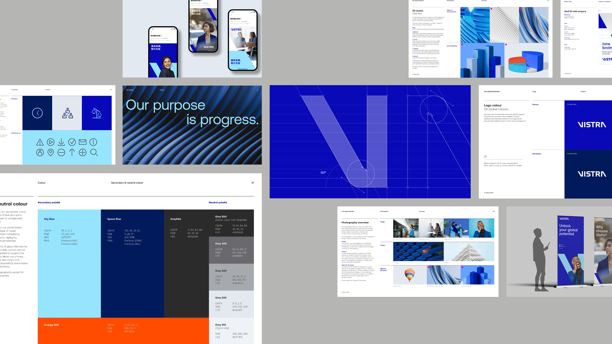
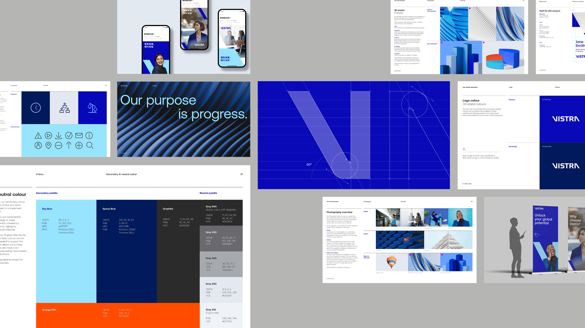

Challenge
The newly combined organization, a powerhouse brand in the professional services industry formed by merging Vistra and Tricor, was poised to become a top five player in corporate and fund solutions. Retaining the Vistra name, it needed to reimagine the Vistra brand while integrating Tricor’s brand attributes. Vistra had defined a clear purpose and a brand promise of “Progress Without Friction,” but the full brand power behind it was missing. It needed a purpose-driven brand strategy, a complete visual system and a new culture to bring that purpose to life.

Solution
After extensive research, we introduced Vistra’s new brand positioning “The Progressive Ally,” proclaiming the company as the global authority in enabling business growth. This positioning shaped new creative principles that guided Vistra’s verbal and visual identity and helped formulate core brand messages and tailored communications to meet the diverse needs of Vistra’s audiences. In line with the brand strategy and creative principles, the reimagined Vistra brand is visually bold, confident, direct and purposefully simple.
Enriching the digital experience
We developed a complete visual system, including a full brand book and supported the web design development process, to build excitement about the new brand and to signal change. We translated the brand’s creative principles into UI design recommendations such as visual hierarchy, readability, engagement and simplicity. We packed these principles into use files and UI components, equipping the Vistra team with the necessary resources to begin the website development.
 

Brand guidelines overview